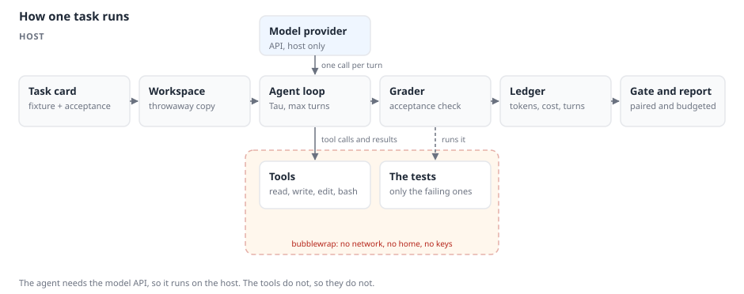
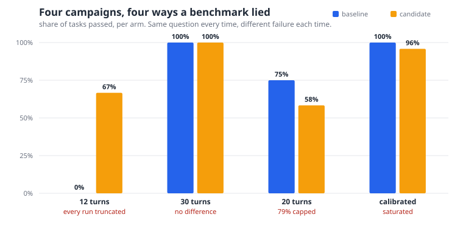
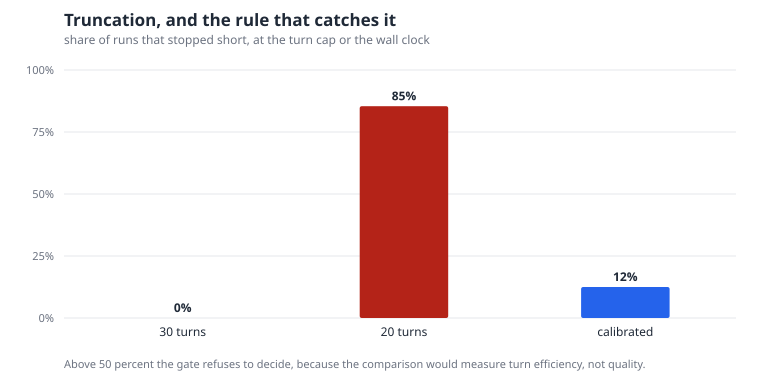
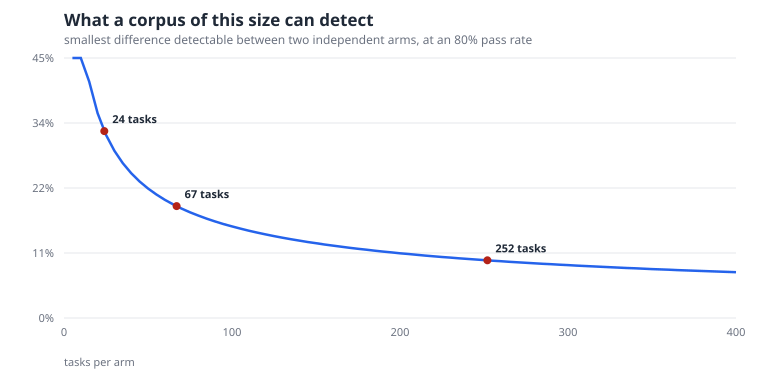

The claim
EVO, Tom Gilb's Evolutionary Value Delivery, asks for a quantified objective, a meter, a budget and a small step that moves the number. Most agile teams kept the steps and dropped the measurement. With agents that is no longer affordable: an agent can produce a thousand changes nobody measured, for a bill nobody predicted.
The interesting part is that EVO maps onto agent work more cleanly than the rituals we kept. A task is a step. An acceptance check is a meter. A token budget is a cost. And "done means value delivered" is the only rule that stops an agent declaring victory.
How it runs

Every run produces a row: tokens, cost, turns, tool calls, exit reason and score. Every campaign produces a gate decision and a self-contained HTML receipt. Nothing is scored by reading a transcript.
What we measured, and what it caught
Four campaigns asked the same question: does a prompt variant make the agent better? Each one failed to answer it for a different reason, and the bench caught each reason with a rule rather than an opinion.
| Campaign | Baseline | Candidate | What it exposed |
|---|---|---|---|
| 3 tasks, 12 turns | 0 / 3 | 2 / 3 | every run truncated mid tool call |
| 3 tasks, 30 turns | 3 / 3 | 3 / 3 | the earlier "win" was the budget |
| 24 tasks, 20 turns | 75% | 58% | 79 percent capped, the gate refused to decide |
| 24 tasks, calibrated | 100% | 96% | corpus saturated, nothing left to win |



What is in the repository
- EVO in software development - the method, Planguage, impact estimation, the ten principles.
- EVO in the AI harness era - SWE-EVO, METR horizons, instruction following, token economics.
- Building a custom harness - the thirteen layers, component defaults, contracts, budgets.
- Simulating the process - scenario corpora, variance, ablation, fault injection.
- A self-improving harness - the loop, the audits, the frozen evaluator rule.
- Choosing a harness - Tau, JAZ and the Python field, with the Python-only rule.
- Benchmarking and evaluating - instrument quality, contamination, the metrics that survive.
Run it
pixi run control # gold passes, null fails, 67 tasks
python -m evo_bench estimate --ledger runs/clickfair.jsonl
python -m evo_bench cycle --candidates traceback-first --concurrency 8
python -m evo_bench report --ledger runs/clickfair.jsonlThe charts on this page are regenerated from the ledgers by
scripts/charts.py, so they cannot drift from the data.